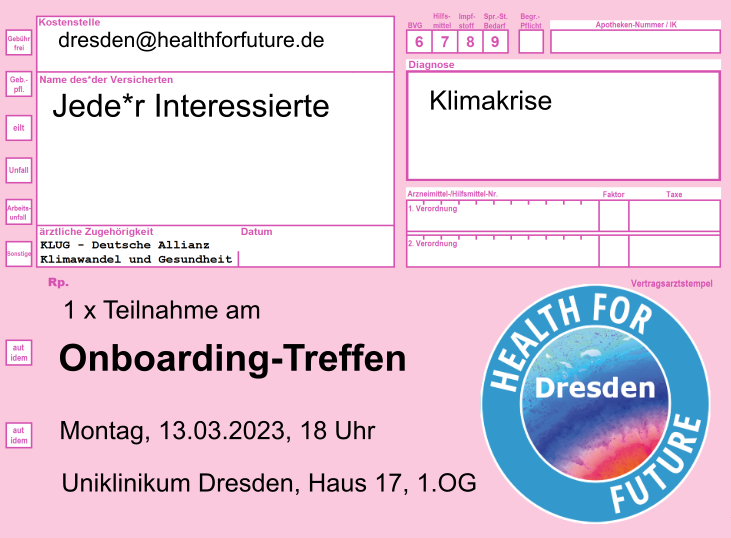
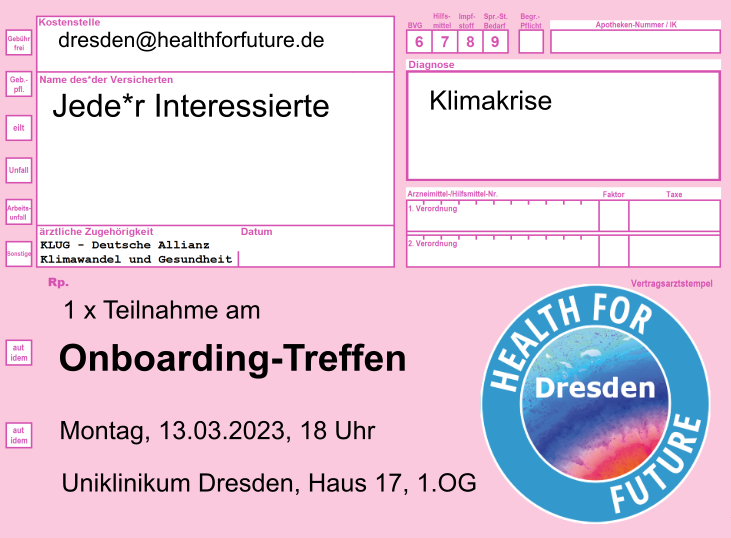

Für alle an einer Mitarbeit Interessierten gibt es ein Onboarding-Treffen:
- Wann: 13.03.2023, 18 Uhr
- Wo: Räumen der Fachschaft Medizin: Uniklinikum Dresden, Haus 17, 1. OG
Wir freuen uns auf dich!

15. Februar 2023
Für alle an einer Mitarbeit Interessierten gibt es ein Onboarding-Treffen:
Wir freuen uns auf dich!
